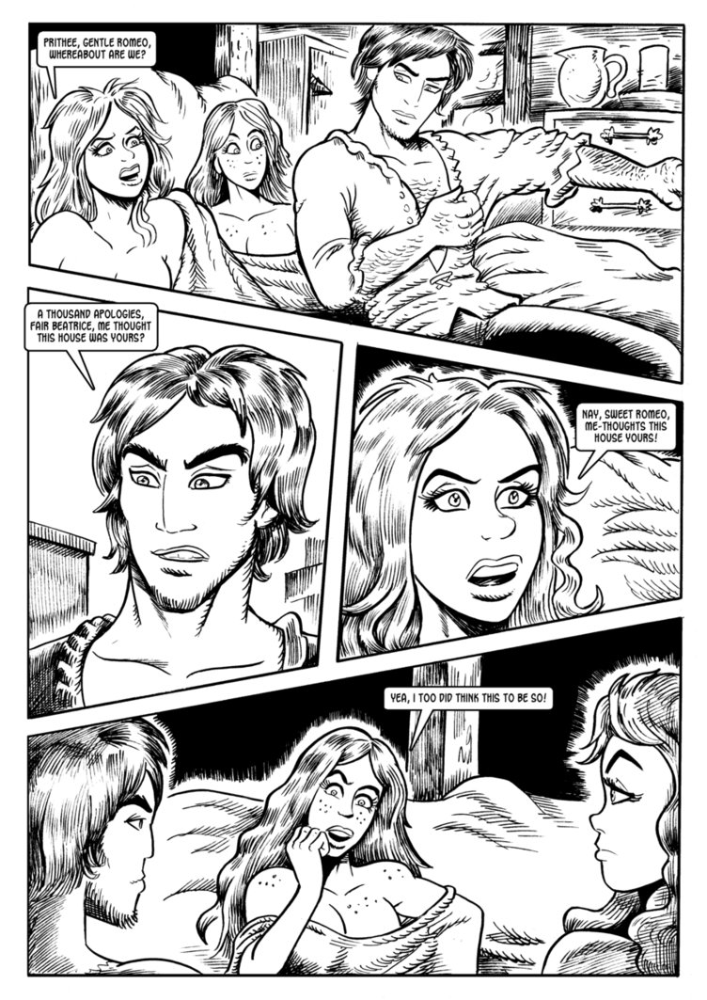

Zu meiner Idee zur Gestaltung der Seite, sowie dem grafischen Konzept kam mir bereits nach wenigen Minuten der Recherche auf divsersen anderen Comic-Webseiten.
Ich wollte in meinem Konzept typische Elemente eines Comics einfließen lassen. Die Gestaltung der Website soll an eine klassiche Comicbuch-Seite erinnern.
Die Inhalte der Website werden dem Betrachter in verschachtelten Kästen präsentiert, welche an eine Comicbuchseite erinnern, die Überschriften sind einer tyischen Comic-Font gehalten.
Zusötzlich werden Informationen in Balken, welche teilweise Bilder schneiden, darstellt - auch hierbei handelt es sich um ein Element aus Comicbüchern. Einige Inhalte werden mit einem Rand in untschiedlichen Stärken dargestellt, auch dies soll einen Comicartigen-Look erzeugen.
Da Comics meist mit knalligen Farben koloriert sind habe ich mich für ein knalliges Orange als "Grundfarbe" der Seite entschieden. Als Akzente auf diesen orangenen Flächen kommt eine nur leicht zu sehende Grafik einer Comicbuchseite zum Einsatz